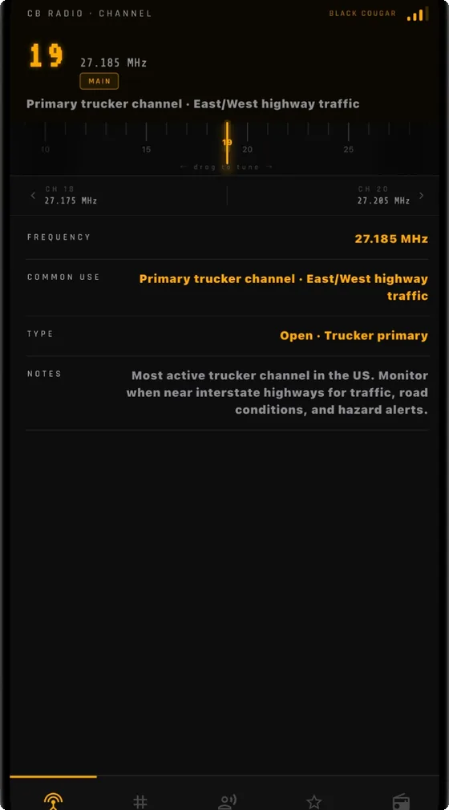
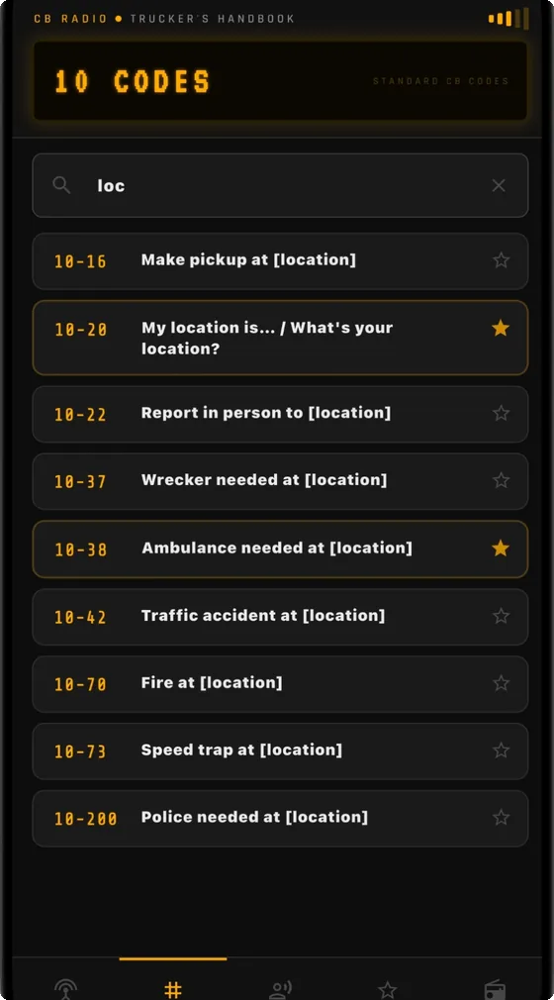
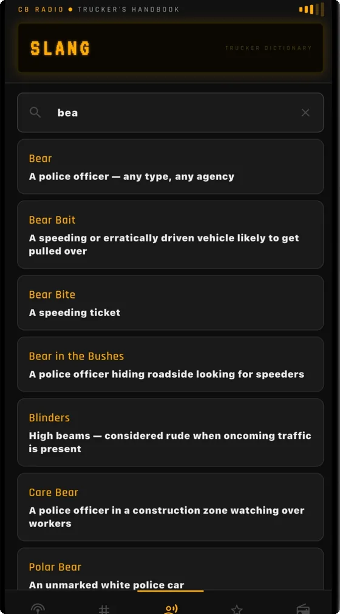

All 40 CB channels with their frequencies, the complete 62-code 10-code reference, and 100+ slang terms — for truckers, off-roaders, overlanders, RV travelers, and anyone who just bought their first radio.
CB is a skill: knowing which channel to monitor, what a code means the moment you hear it, and how to speak the language of the road. That used to take years of road time to pick up. It works with no signal, because a radio doesn't need one either.
$1.99 once. No subscription, no ads, no account. Everything is built into the app, so it works on the interstate, on the trail, and anywhere cell coverage gives out.
Channels is the one you live in. The other three are where you go when you need the detail.



CB runs on 40 channels between 26.965 and 27.405 MHz. A handful of them carry most of the traffic, and which one you monitor depends on where you are and what you drive.
| Channel | Frequency | Use |
|---|---|---|
| 4 | 27.005 MHz | Off-road and overland groups |
| 9 | 27.065 MHz | FCC-reserved for emergencies only — not for general conversation |
| 13 | 27.115 MHz | RV travelers and marine use |
| 17 | 27.165 MHz | North/south routes |
| 19 | 27.185 MHz | Primary trucker channel — east/west interstate traffic, road conditions, bear reports |
| 21 | 27.215 MHz | Regional and local roads |
| 36–40 | 27.365–27.405 MHz | SSB-capable, for operators running single sideband |
Channel 9 is reserved by the FCC for emergency communications and traveler assistance. It's monitored by REACT volunteers and some agencies. Keep it clear.
$1.99, once. No subscription, no ads, no in-app purchases, no account.
CB radios operate on 40 designated channels between 26.965 MHz (Channel 1) and 27.405 MHz (Channel 40). Channel 9 is FCC-reserved for emergency communications only. Channel 19 is the standard trucker channel on US interstates. Channels 36–40 are SSB-capable. The app lists all 40 with frequencies, usage notes, and flags for the special ones.
Channel 19 (27.185 MHz) is the primary trucker channel on most US interstates for east/west highway traffic. Channel 17 is used for north/south routes, and Channel 21 for regional roads. Channel 9 is reserved for emergency use only and shouldn't be used for general conversation.
10-4 means "OK, message received" — an acknowledgment that you heard and understood the transmission. It's the most commonly used 10-code. The app includes all 62 standard codes with plain-English meanings and a search.
Yes, completely. All the data is built into the app — no internet connection required. It works wherever you take the radio: interstates, off-road trails, campgrounds, and anywhere cell coverage disappears.
Truckers, off-roaders, overlanders, RV travelers, preppers, and road trip enthusiasts. Anyone who operates a CB or wants to understand what they're hearing on one — whether you've run a radio for thirty years or picked up your first one last week.
No. $1.99 one-time purchase — no subscription, no ads, no in-app purchases.
CB Radio — Trucker's Handbook is an independent reference app, not affiliated with the FCC, REACT International, or any CB radio manufacturer. Channel assignments and 10-code definitions follow standard US CB conventions; regional usage varies. Always follow FCC regulations when operating a CB radio.